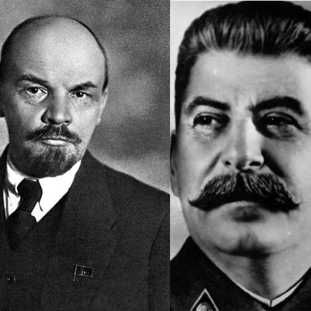

Back
Back
AGAINST THE DOGMATIC LEFT!

1. The main point of Leninism is to adjust Marx's communism according to the current situation
of semi-feudal Russia, he (Lenin) thought that instead of waiting
the workers to be educated politically,
it will be better to create a highly disciplined party, filled with people who understand communism really well,
and they will
lead the workers to the communist society. Thus the establishment of vanguard party.
2. The core problem is: with the establishment of vanguard party, Lenin indirectly
shattered the people into two classes; the politically enlightened one, and the politically
immature one. This is extremely dangerous because it closes mass
participation and it will create distances between the party and the people.
3. Proven Historically, Soviet Union changed from workers revolution into such bureaucratic, extremely hierarchic and corrupt state.
This proves that vanguardism
is flawed in preventing abuse of power, the party that was intended to lead the workers became an elite circle which was extremely disconnected from the workers.
They live in comfortable house while the people live in brutalist apartment, what a social gap huh? that shatters the whole point of communism, workers utopia my ass.
4. They are not destined by god! when you're in danger after criticizing revolutionary figure,
the revolution rots. The revolution turned into
hellish cult, general secretary became the new king under red fabric,
except its the blood spilled by the regime, not blood spilled in the revolution.